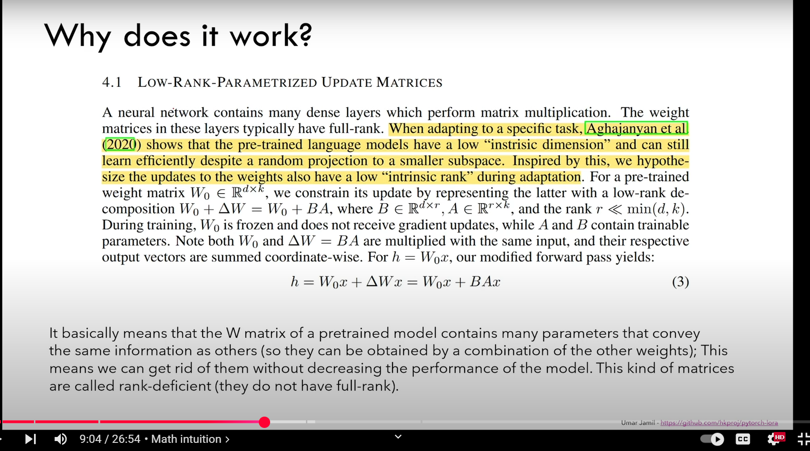

Lower Rank Adaption (LoRA) #
| Last Edited | 11/01/2025 |

NOTE: I am watching the legend “Umar Jamil” but most of the written context below is copied from my conversation with Gemini 2 Flash
General information around rank of a matrix #
-
The rank of a matrix represents the number of linearly independent rows or columns it has. Example: Consider a 3x3 matrix with rows:
- Row 1: [1, 0, 0]
- Row 2: [0, 1, 0]
- Row 3: [1, 1, 0]
- Here, Row 3 is simply Row 1 + Row 2. Row 3 is not linearly independent, so the rank of this matrix is 2 not 3 because only 2 rows are linearly independent.
-
By default, the weight matrices are full-rank. Full-rank means that the rows or columns of the matrix are linearly independent. In other words, none of the rows or columns can be formed as a combination of the others.
-
Rank-Deficient Matrices:
- The passage also talks about rank-deficient matrices. These are matrices that are not full-rank.
- Specifically, it explains that the matrix W of the pre-trained model contains a lot of redundant information, so that many of the parameters convey the same information.
- Because of this, they can be obtained by a combination of the other parameters, meaning that some rows or columns of the matrix can be expressed as a linear combination of the other rows or columns.
- The fact that parameters can be gotten rid of without decreasing performance is a good way of illustrating that matrices are rank deficient.
Aghajanyan et al. (2020) showed that pre-trained models can still learn well even when their weights are randomly reduced to a smaller space. This implies that the original weight matrices have redundancy, since the full space is not required for effective training.
Single Value Decomposition: #
- It is used to identify rank of a matrix
- From Umar’s video, SVD is not just used for rank identificatoin but even for identifying the 2 sub-matrices in LoRA like situations. Ex. if Matrix A = NxN, then Lora suggests 2 matrix of rank “r” where (r « N) such that: there are 2 submatrix of shape: (Nxr) and (rxN). These 2 matrix are made from: U and VT. (can be seen below).
- The rank is non-zero diagonal elements from sigma matrix
- For better explanation: https://github.com/hkproj/pytorch-lora/blob/main/svd.ipynb
- Pasting what I quickly read from Gemini:
SVD: A Quick Overview
SVD is a powerful factorization technique that breaks down any matrix (let’s call it ‘A’) into three other matrices:
A = U Σ VT
Where:
- U: An m x m orthogonal matrix (columns are orthonormal) where m is the number of rows of A.
- Σ (Sigma): An m x n diagonal matrix, where n is the number of columns of A, containing the singular values of A. These are non-negative numbers, usually arranged in descending order. The diagonal can have zeros.
- VT: The transpose of an n x n orthogonal matrix (rows are orthonormal).
How SVD Relates to Rank
The magic lies in the singular values (the diagonal elements of Σ):
- Rank = Number of Non-Zero Singular Values: The rank of the original matrix ‘A’ is equal to the number of non-zero singular values in Σ.
- If Σ has two non-zero values (e.g., 5 and 2), the rank of A is 2.
- If Σ has three values (e.g., 7, 3, and 0), the rank of A is 2.
Why is SVD Useful for Rank (and More)?
-
Reliable Rank Determination: SVD is more numerically stable than row reduction, especially when dealing with matrices that have near-zero values (which can cause rounding errors with row reduction). This is important for real-world data.
-
Reveals “Importance” of Dimensions: The singular values tell you how much variance or “energy” is captured by each dimension/feature. Larger singular values correspond to more important directions.
-
Dimensionality Reduction: You can approximate the original matrix by only using the largest singular values and their corresponding U and V columns. This is very common for reducing noise or decreasing dimensions in your data.
-
Pseudo-Inverse: SVD provides a way to compute pseudo-inverses of non-square matrices, which is crucial for solving many types of equations.
Example
Let’s take the previous matrix example and assume we computed the SVD (I will not show the computation here, but in practice, you use software to do it):
A = [ 1 2 3 ]
[ 2 4 6 ]
[ 1 3 5 ]
The SVD might result in (approximately) something like:
- U: 3x3 orthogonal matrix
- Σ (Sigma) =
[ 9.5 0 0 ] [ 0 0.7 0 ] [ 0 0 0 ] - VT: 3x3 orthogonal matrix
Notice the Sigma matrix has two non-zero singular values (9.5 and 0.7) this is in agreement with what we found through row reduction.
Code Example: #
class LoRAParametrization(nn.Module):
def __init__(self, features_in, features_out, rank=1, alpha=1, device='cpu'):
super().__init__()
# Section 4.1 of the paper:
# We use a random Gaussian initialization for A and zero for B, so ∆W = BA is zero at the beginning of training
self.lora_A = nn.Parameter(torch.zeros((rank,features_out)).to(device))
self.lora_B = nn.Parameter(torch.zeros((features_in, rank)).to(device))
nn.init.normal_(self.lora_A, mean=0, std=1)
# Section 4.1 of the paper:
# We then scale ∆Wx by α/r , where α is a constant in r.
# When optimizing with Adam, tuning α is roughly the same as tuning the learning rate if we scale the initialization appropriately.
# As a result, we simply set α to the first r we try and do not tune it.
# This scaling helps to reduce the need to retune hyperparameters when we vary r.
self.scale = alpha / rank
self.enabled = True
def forward(self, original_weights):
if self.enabled:
# Return W + (B*A)*scale
return original_weights + torch.matmul(self.lora_B, self.lora_A).view(original_weights.shape) * self.scale
else:
return original_weights